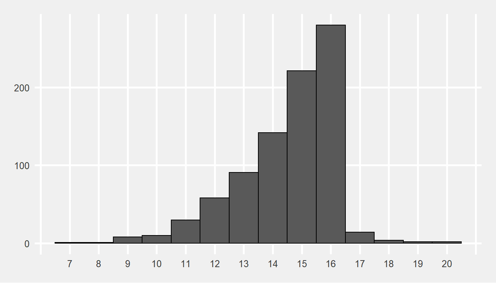
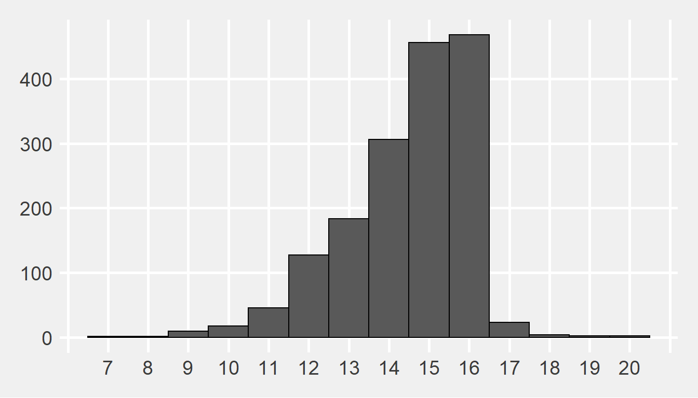

2 Juvenile Justice Arrest Data
This data source was compiled by CYPB-JJ from iJes. The derived file contained the Arrest Count information required to create the CYPB Juvenile Justice Map. All arrest counts were defined by CYPB-JJ.
2.1 Initial Cleaning
The original version of this data contained 1,735 records from 946 individual juveniles. Because the purpose of this analysis was to assess juvenile arrests in New Orleans, we removed records of inidividuals without a listed primary address within the city. To do this, we created the following systematic process for identifying a single Primary New Orleans Zip for each juvenile who may or may not have had multiple home addresses listed in their records.

Figure 2.1: Inclusion Criteria, n= Number of Juveniles, k= Number of Arrest Records
Remove all juveniles who do not have a single record with a home New Orleans Zip Code
Keep all individuals who do have a single record with a home New Orleans Zip Code. Keep all of their records for analysis (even records for which these individuals have a with a home address outside of New Orleans listed) and then:
- If the juvenile only has one home zip listed, use that as their single New Orleans home zip
- If a juvenile has multiple home zips listed, identify a
Primary New Orleans Zip Codeto associate with all of these individuals’ records through the following procedure:
- If a juvenile has multiple records with different home New Orleans Zip Codes:
- Include the New Orleans Zip Code that is listed most frequently for this juvenile as their
Primary New Orleans Zip Code
- Include the New Orleans Zip Code that is listed most frequently for this juvenile as their
- If a juvenile has multiple records with different home New Orleans Zip Codes that appear with the same frequency:
- Include the New Orleans Zip Code that is listed most recently for this juvenile as their
Primary New Orleans Zip Code
- Include the New Orleans Zip Code that is listed most recently for this juvenile as their
This process resulted the removal of 89 records for 80 individuals leaving a resulting 1,646 records and 866 individuals in the final data set.
2.2 Arrests per Date
The cleaned data source contained 1,646 records with intake dates spanning the 18 month period of October 01, 2017 - March 31, 2019.
Figure 2.2: Arrests per Date
2.3 Arrests per Juvenile
The 1,646 records represent arrests of 866 individuals.
- The average number of arrests per juvenile is 1.83.
- 69.56% (658) of juveniles with an arrest had exactly 1 arrest record.
- 13.21% (125) of juveniles with an arrest had exactly 2 arrest records.
- 6.448% (61) of juveniles with an arrest had exactly 3 arrest records.
- 10.78% (102) of juveniles with an arrest had 4 or more arrest records.
Figure 2.3: Arrests per Juvenile

2.4 Arrests per Home Zip
Figure 2.4: Total Juvenile Arrests per Home Zip
The following figures represent the number of Arrests per Home Zip. A Primary New Orleans Home Zip Code was derived for each juvenile in the Juvenile Justice Arrest data set through the process outlined in Section 2 of this report. The zip codes listed in the figures below represent these Primary Home Zip Codes. Each individual in this data set is only represented by 1 Primary Home Zip Code.
Figure 2.5: Juvenile Arrests per Home Zip